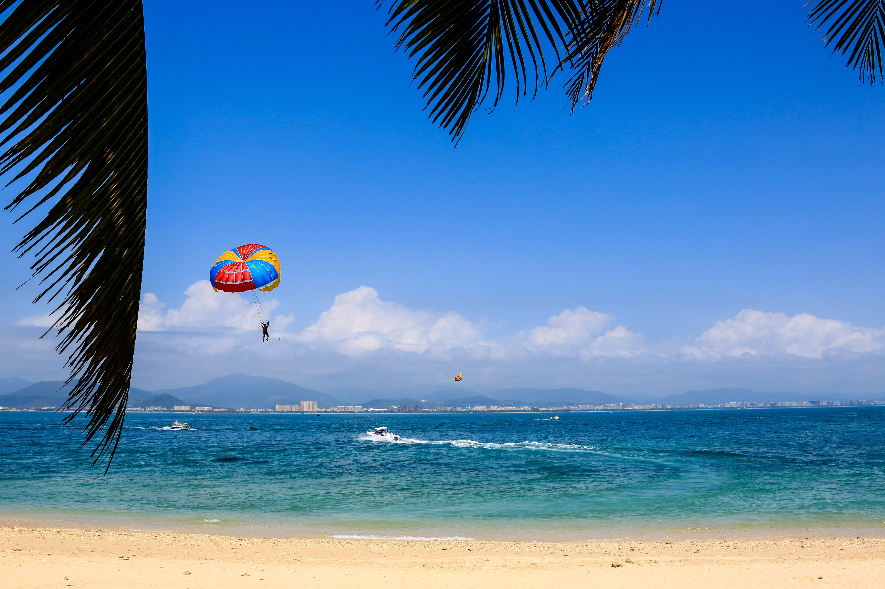

DESTINATION GUIDE

DESTINATION GUIDE
三亚位于海南岛最南端，是中国知名的热带滨海度假城市，也是面向南海的重要门户。海湾、山林与黎苗文化相映成景，凤凰国际机场和环岛交通网络让这座阳光之城连接国内外旅客。
位于海南岛最南端，濒临南海，拥有海湾、岛屿与热带山地相连的地理环境。
热带季风气候
全年温暖、阳光充足，冬季尤为温和舒适，夏秋较湿热并进入主要降雨时段。
古代称崖州，历史上是海南南部的重要区域；近现代以来逐步发展为滨海城市。
海南本土文化、黎族苗族传统、渔业生活与南海文化，共同塑造城市的多样面貌。
日照较强，请做好防晒与补水；海边活动应关注天气、潮汐和安全提示。